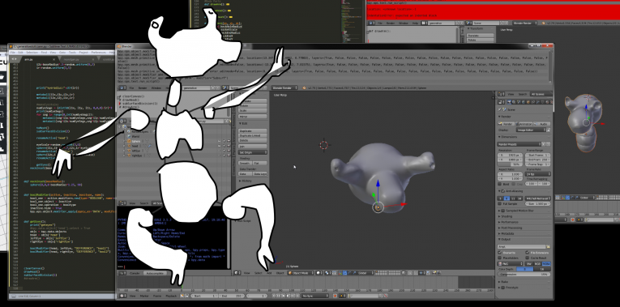
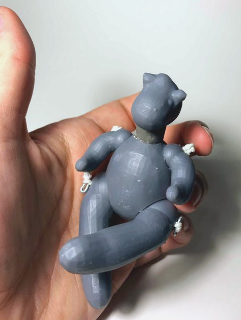
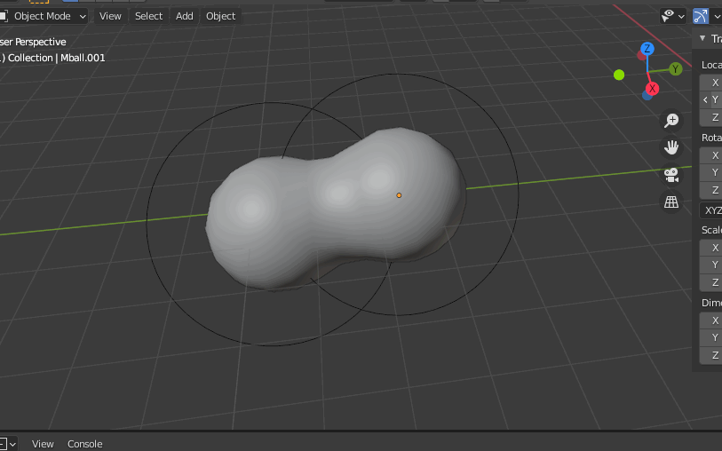
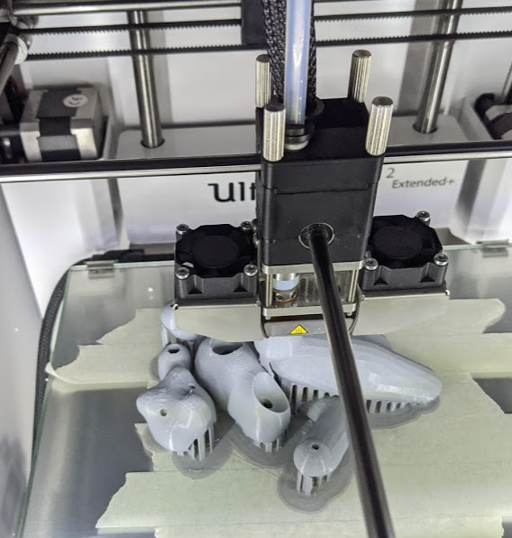
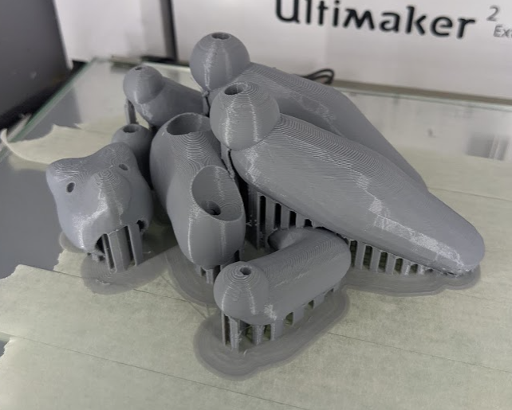
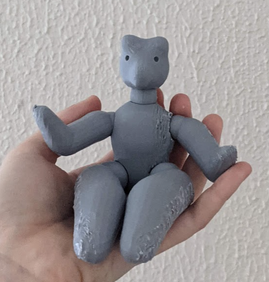

page under construction
I talked about this project at the Art&&Code: Homemade Festival in January 2021; watch my talk Here !
Generative friends that you can print out and take with you! Scripted in Blender, these friends are ball-jointed creatures you can pose and play with.
My project is scripted in Blender using Python, and mainly metaballs. Running the code creates a 3d Mesh that can be printed out on a 3d printer, and strung together to create a functional and movable doll. This project is rooted in my interest and experience in the craft of doll making, as well as my fascination with generativity and computational art. I used code as a way to disect my own practice and recreate a parallel version of my practice that can be run infinitly and printed out with minimal supervision.
The backend of this project was scripted in blender by writing a multi-function python file - This file generates parameters for the new creature based on specified features or randomness. The first thing that is generated is the head, which informs the size of the neck. After this the body is generated, and limbs are created last.
The individual parts are rendered with metaballs and boolean geometry

